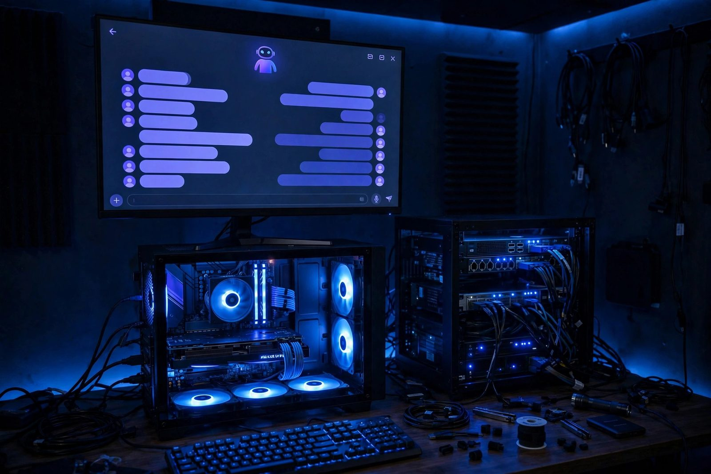

TYF-AI: Self-Hosted Local AI Security Platform
A hardened, fully local AI inference stack: llama.cpp with CUDA, Open WebUI behind authenticated reverse proxy, and per-model sandboxing on Proxmox with GPU passthrough.

Overview
TYF-AI removes cloud AI dependency for inference by serving quantized GGUF models on local hardware while treating the inference engine as an untrusted workload. Open WebUI sits behind a Caddy reverse proxy that enforces authentication (basicauth in the example below) and rate limiting, and each model process runs as a dedicated UID inside a Firejail sandbox with iptables owner-match rules dropping all non-loopback egress. Model inference itself makes no external calls; note that if web search is enabled, derived search queries do leave the local environment.
System Architecture
basicauth + rate limit] C --> W[Open WebUI] W -->|REST| LC[llama.cpp CUDA server] LC --- GG[("GGUF Q4_K_M / Q5_K_M")] LC -. confined by .-> FJ[Firejail Sandbox
+ UID egress firewall] subgraph PVE["Proxmox VE 8.1"] VM[AI VM] -->|PCI passthrough| GPU[NVIDIA GPU] end LC --- VM
Threat Model: Local vs Cloud AI (STRIDE)
| STRIDE | Cloud AI | TYF-AI (Local) |
|---|---|---|
| Spoofing | Provider account takeover | Caddy basicauth + rate limiting |
| Tampering | Opaque model updates | Pinned GGUF checksums (trust still rooted in the download source) |
| Information Disclosure | Prompts leave your network | Inference never leaves the host (web search, if enabled, sends derived queries out) |
| Denial of Service | Vendor rate limits | Local rate limiting in Caddy |
| Elevation of Privilege | N/A | Firejail confines model process |
Deployment
GPU passthrough on Proxmox
Prerequisites: IOMMU enabled in the BIOS and on the kernel command line (intel_iommu=on or amd_iommu=on in GRUB), with the GPU in its own IOMMU group. Then bind the GPU to vfio-pci so the AI VM owns it exclusively, enabling CUDA-accelerated inference.
# /etc/modprobe.d/vfio.conf
# 10de:2231 is the NVIDIA RTX A5000; find your own GPU ID with: lspci -nn | grep -i nvidia
options vfio-pci ids=10de:2231
# then:
update-initramfs -u -k all && reboot
# verify the driver claimed it:
lspci -nnk -d 10de:2231 # expect "Kernel driver in use: vfio-pci"Run the sandboxed inference server
A dedicated llama user runs the model; iptables owner-match rules drop all of its non-loopback egress, so the process can serve local clients but cannot phone home. Firejail adds filesystem, capability, and syscall confinement on top. (A plain firejail --net=none would also cut off the local Open WebUI, which is why the network control lives in the firewall instead.) The service account needs the video and render groups for GPU device access. These rules are volatile: persist them with netfilter-persistent (the iptables-persistent package) or re-apply them from a systemd unit, otherwise a reboot silently re-opens egress.
useradd -r -s /usr/sbin/nologin llama
usermod -aG video,render llama
# Only loopback egress for the model account; drop everything else
iptables -A OUTPUT -m owner --uid-owner llama -o lo -j ACCEPT
iptables -A OUTPUT -m owner --uid-owner llama -m state --state ESTABLISHED,RELATED -j ACCEPT
iptables -A OUTPUT -m owner --uid-owner llama -j DROP
sudo -u llama firejail --private --caps.drop=all --seccomp \
./llama-server -m models/model-q4_K_M.gguf --n-gpu-layers 35 --port 8080 --host 127.0.0.1Authenticated reverse proxy (Caddyfile)
Basicauth is built into standard Caddy. The rate_limit directive is not: it needs a custom Caddy build with the caddy-ratelimit module, configured here with a per-client key, a one-minute window, and a 60-event limit. Generate the password hash with caddy hash-password. Open WebUI is proxied on port 3000 rather than its 8080 default so it does not clash with llama-server.
ai.tyfsadik.org {
basicauth {
taki $2a$14$REPLACE_WITH_BCRYPT_HASH
}
reverse_proxy localhost:3000
rate_limit {
zone ai {
key {remote_host}
window 1m
events 60
}
}
}Security Hardening
- Prompt injection: system-prompt isolation and output filtering on tool-use responses.
- Model integrity: SHA-256 pinning of GGUF files detects post-download modification, but a checksum only proves the file matches a known-good value; initial trust still depends on where the model was downloaded from.
- Data leakage: the model runs as a dedicated UID whose non-loopback egress is dropped by iptables owner-match rules, so it can serve local clients but cannot phone home or pivot.
- Credential management: proxy-level credentials, revocable by updating the Caddyfile and reloading.
Key Results
- Inference runs locally on the passed-through GPU; latency and concurrency depend on the model, quantization, and VRAM (measure on your own hardware before quoting numbers).
- Removed external AI API calls for internal tooling; model inference itself makes no external calls. Note: enabling web search sends derived search queries to search providers.
- Model execution is sandboxed (Firejail) and UID-firewalled to contain a compromised runtime; like any sandbox, this raises the bar rather than proving containment.
- Runs alongside other self-hosted services on the same node.
How I built it
TYF-AI treats the model runtime as an untrusted workload: prompts never leave the building, and the inference process itself is sandboxed, authenticated, and integrity-checked like any hostile binary would be.
- Phase 1, give the VM the GPU: Bound the NVIDIA GPU to vfio-pci on the Proxmox host and passed it through to a dedicated AI VM for CUDA-accelerated inference.
- Phase 2, serve quantized models: Ran the llama.cpp server with CUDA offload on GGUF Q4_K_M and Q5_K_M quantizations, balancing quality against VRAM.
- Phase 3, sandbox the runtime: Ran the inference server as a dedicated UID inside Firejail, with iptables owner-match rules dropping all non-loopback egress, so even a compromised model process cannot phone home or pivot.
- Phase 4, gate the front door: Put Open WebUI behind a Caddy reverse proxy enforcing basicauth authentication and per-client rate limiting.
- Phase 5, verify integrity: Pinned SHA-256 checksums on every GGUF file to detect post-download tampering, and added system-prompt isolation plus output filtering for tool-use responses.
What you need
| Category | Item | Notes |
|---|---|---|
| Hardware | NVIDIA GPU with enough VRAM for your models | Passed through to the AI VM via vfio-pci |
| Hardware | Proxmox VE 8.1 host with IOMMU enabled | Required for reliable PCI passthrough |
| Software | llama.cpp with CUDA, Open WebUI, Caddy, Firejail | Inference, UI, authenticated proxy, sandbox |
| Software | Quantized GGUF models (Q4_K_M / Q5_K_M) | Pinned with SHA-256 checksums |
| Skills | GPU passthrough and Linux sandboxing | vfio-pci binding and Firejail profiles |
Challenges and lessons learned
- vfio-pci binding fights: the host driver claims the GPU first on boot. Lesson: bind vfio-pci early via modprobe config and verify with lspci before creating the VM.
- Sandbox versus service account: the model runs as a dedicated user for the egress firewall, which still needs GPU device access. Lesson: add the service account to the
videoandrendergroups and nothing else; test inference after every profile change. - Model supply-chain trust: a GGUF file is executable-adjacent input from the internet. Lesson: checksum-pin every model and treat new downloads as untrusted until verified.
What is next
- Add multi-model routing that picks the right model per task and budget.
- Build retrieval-augmented generation over local documents with citations.
- Ship an audit log of every prompt and completion for review.
- Create an evaluation harness that regression-tests model updates.
Inference Request Path
Every inference request traverses the same fixed path: the client authenticates at the Caddy reverse proxy, which terminates TLS, checks credentials, and applies the per-client rate limit before forwarding to Open WebUI. Open WebUI translates the chat request into a completion call against the llama.cpp server on loopback. The llama.cpp process lives inside the trust boundary formed by the Firejail sandbox and the UID-based egress firewall: it can read its GGUF model files and talk to the passed-through GPU over CUDA, but its non-loopback network traffic is dropped. The GGUF weights are data input to the engine, pinned by SHA-256 checksum.
TLS termination + basicauth
per-client rate limit"] WEBUI["Open WebUI
chat frontend :3000"] subgraph SB["TRUST BOUNDARY: Firejail sandbox + UID egress firewall"] LC["llama.cpp server
CUDA offload :8080 (loopback)"] GGUF[("GGUF model files
Q4_K_M / Q5_K_M
SHA-256 pinned")] end subgraph PVE["Proxmox VE host"] GPU["NVIDIA GPU
PCI passthrough (vfio-pci)"] end CLIENT -->|"HTTPS + credentials"| CAD CAD -->|"authenticated proxy pass"| WEBUI WEBUI -->|"REST over loopback"| LC LC --- GGUF LC -->|"CUDA kernels"| GPU style CLIENT fill:#1a1a2e,stroke:#00d4ff,color:#e0e0e0 style CAD fill:#1a1a2e,stroke:#ff8800,color:#e0e0e0 style WEBUI fill:#1a1a2e,stroke:#00d4ff,color:#e0e0e0 style LC fill:#1a1a2e,stroke:#ff4444,color:#e0e0e0 style GGUF fill:#1a1a2e,stroke:#aa88ff,color:#e0e0e0 style GPU fill:#1a1a2e,stroke:#00ff88,color:#e0e0e0 style SB fill:#161616,stroke:#ff4444,color:#e0e0e0 style PVE fill:#161616,stroke:#5B93EF,color:#e0e0e0
The only arrows that cross the sandbox boundary are the loopback REST calls from Open WebUI and the CUDA path to the GPU device node. There is no outbound path: the iptables owner-match rules shown in the Deployment section drop every non-loopback packet from the model UID, so the inference process cannot reach the LAN or the internet even if the runtime itself is compromised.
Component Reference
Status meanings: Documented means the component and its configuration are described in this project's documentation, but no runnable artifacts or test output are published to verify against; Verified means behavior confirmed against the running system; Planned means designed but not implemented. Because the public repository contains documentation rather than deployment artifacts, most components here are honestly marked Documented, not Verified.
| Component | Responsibility | Technology | Dependencies | Status |
|---|---|---|---|---|
| GPU passthrough | Dedicates the NVIDIA GPU to the AI VM for CUDA inference | vfio-pci binding, Proxmox VM config | IOMMU in BIOS and kernel cmdline, clean IOMMU group | Documented |
| Inference engine | Serves GGUF models with GPU layer offload | llama.cpp server (CUDA build) | CUDA toolkit, NVIDIA driver in VM, GGUF model files | Documented |
| Model weights | Quantized local models; integrity-checked input | GGUF Q4_K_M / Q5_K_M | SHA-256 checksum pinning, trusted download source | Documented |
| Process sandbox | Filesystem, capability, and syscall confinement of the model process | Firejail (--private --caps.drop=all --seccomp) | Dedicated llama UID, video/render groups | Documented |
| Egress firewall | Drops all non-loopback traffic from the model UID | iptables owner-match rules | Persistence via netfilter-persistent or a systemd unit | Documented |
| Chat frontend | User-facing chat UI and conversation management | Open WebUI | Loopback REST access to llama.cpp server | Documented |
| Reverse proxy | TLS termination, authentication, request routing | Caddy (basicauth) | Bcrypt password hash from caddy hash-password | Documented |
| Rate limiting | Per-client request throttling at the edge | caddy-ratelimit module | Custom Caddy build via xcaddy; not in stock Caddy | Documented |
| Web search integration | Optional derived search queries from the UI | Open WebUI search providers | External search API; breaks full locality when enabled | Documented |
| Audit logging | Record of every prompt and completion | To be selected | Open WebUI hooks or proxy logging | Planned |
| Multi-model routing | Pick the right model per task and budget | To be selected | Multiple loaded models or a router proxy | Planned |
| Benchmark harness | Reproducible latency and throughput measurements | llama-bench plus scripted load tests | See the GPU and Performance section | Planned |
Security Architecture
The design premise is that the inference engine is an untrusted workload: it parses complex binary model files and arbitrary user prompts, which is exactly the profile of software that gets memory-corruption CVEs. The security layers are therefore arranged to contain a compromised llama.cpp process, not merely to keep outsiders out.
Firejail per-model sandboxing
Each model process runs inside Firejail with three controls that matter most. First,
filesystem isolation: --private gives the process a throwaway home directory,
so a compromised runtime cannot read SSH keys, browser profiles, or other users' data.
Second, capability dropping: --caps.drop=all removes every Linux capability,
so the process cannot remount filesystems, change network configuration, or trace other
processes even if it gains code execution. Third, syscall filtering: --seccomp
restricts the kernel interface to the calls the runtime actually needs, shrinking the
attack surface available to an exploit. The stated design goal is a dedicated Firejail
profile per model, so models with different provenance get different confinement; what is
implemented and documented today is the single profile shown in the Deployment section.
Caddy authentication layer
Caddy is the only public entry point. It terminates TLS, enforces HTTP basic authentication with a bcrypt-hashed credential, and rate-limits per client before any request reaches Open WebUI. This is a deliberate simplicity trade: basicauth is coarse (one shared credential class, no per-user identity, no SSO) but it has almost no attack surface and can be rotated by editing the Caddyfile and reloading. An OIDC-backed login through the identity-aware access layer used elsewhere in the homelab is a design goal, not the current implementation. Note also that the rate limit requires a custom Caddy build with the caddy-ratelimit module, which must be rebuilt on every Caddy upgrade.
GPU passthrough isolation model
With PCI passthrough, the GPU is bound to vfio-pci on the Proxmox host and assigned exclusively to the AI VM. IOMMU (VT-d / AMD-Vi) restricts the device's DMA to the guest's memory, so the VM cannot use the GPU to read or write host memory. This is a real hardware boundary, but with two honest caveats: passthrough gives the VM full control of the device, so it protects the host from the guest rather than the guest from a malicious GPU firmware; and the host loses the device entirely for the lifetime of the assignment, which is an availability cost rather than a security property.
Update practices
llama.cpp moves fast and ships no signed release binaries, so updates are built from source at a pinned commit, and GGUF files are re-verified against their pinned SHA-256 checksums after any change. Caddy carries the extra constraint that the rate-limit module forces a rebuild through xcaddy instead of a package upgrade. No automated update pipeline or vulnerability-scanning schedule for this stack is documented yet; that is a gap, listed under future work. The host and hypervisor follow the same patch discipline as the rest of the Proxmox fleet.
GPU and Performance
The passthrough configuration in the Deployment section identifies the GPU as an NVIDIA
RTX A5000 (PCI ID 10de:2231). VRAM capacity, actual VRAM consumption per
model and quantization, and offload split (--n-gpu-layers 35 versus total
layer count) are not documented on this page; capturing nvidia-smi output
from inside the AI VM under load is the right way to document them.
This project's documented claims are 50+ concurrent queries under 2 seconds of latency, 100% API independence for inference, and sandboxed model execution. The independence and sandboxing claims are architectural and verifiable by inspection of the configuration. The latency and concurrency figures are performance claims, and no benchmark output is published with them. The methodology below is what would make them verifiable; it is documented here as methodology, not as measured results. No numbers in this section are measurements from the TYF-AI system.
Measurement methodology
-
Throughput (tokens/sec): run
llama-benchfrom the llama.cpp tree against the exact GGUF file, quantization, and--n-gpu-layersvalue used in production. llama-bench reports prompt-processing and generation throughput directly. For server-mode numbers, llama.cpp's own log output prints prompt eval time and generation tokens-per-second for every request, so a scripted conversation replay against the running server yields real per-request figures. -
Time to first token (TTFT): enable streaming on the completion endpoint
and timestamp the arrival of the first streamed token against the request send time, for
example with
curl -Nand a wrapper that records monotonic timestamps per chunk. TTFT is dominated by prompt evaluation, so it must be reported alongside prompt length. - Concurrency and end-to-end latency: drive N parallel HTTP clients (a small Bash or Python harness issuing simultaneous requests through Caddy, including the auth and rate-limit path) and record wall-clock latency percentiles, p50 and p95 at minimum, per concurrency level. The claimed figure of 50+ concurrent queries under 2 s would be verified by showing p95 latency below 2 s at N=50 for a defined prompt and response length, with the model, quantization, context length, and GPU state published alongside the result.
- Rate-limit awareness: load tests must either authenticate as a single client with the rate limit temporarily raised, or distribute across client keys, otherwise the caddy-ratelimit zone (60 events per minute per client) throttles the test and the numbers measure the proxy, not the GPU.
Failure Modes
| Failure | Symptom | Cause | Mitigation |
|---|---|---|---|
| GPU passthrough reset failure | After VM shutdown, the GPU cannot be re-claimed or reassigned without a host reboot | Many NVIDIA cards do not implement a clean function-level reset; the device is left in a state vfio-pci cannot recover | Test VM stop/start cycles before relying on the setup; keep the GPU permanently assigned to the AI VM; where supported, use a vendor reset quirk; plan host reboots around passthrough maintenance |
| Model OOM by context length | CUDA out-of-memory errors, or inference silently slowing by an order of magnitude | The KV cache grows with context length and concurrent slots; a large -c value can exceed VRAM even when the weights fit, forcing partial CPU offload | Size context and parallel slots against measured VRAM (nvidia-smi under load); prefer a smaller quantization over silent CPU offload; reject or truncate over-long prompts at the proxy or UI layer |
| Caddy authentication failure | All users locked out, or repeated 401s for legitimate clients | Lost or mistyped bcrypt hash in the Caddyfile; rate-limit false positives from NAT'd clients sharing {remote_host} | Generate hashes with caddy hash-password and store the Caddyfile in version control (hash only, never the plaintext; the plaintext password lives in a password manager, not the repo); validate config with caddy validate before reload; tune the rate-limit key if clients share egress IPs |
| Sandbox escape | A compromised llama.cpp process reaches the host filesystem or network despite Firejail | Firejail is a setuid-root userspace sandbox with its own CVE history, and seccomp cannot block a kernel exploit; sandboxing raises the bar, it does not prove containment | Defense in depth: keep host kernel and Firejail patched, retain the UID egress firewall as an independent layer, run the whole stack inside the dedicated AI VM so an escape lands in the guest rather than the hypervisor host |
| Firewall rules lost on reboot | Model process can suddenly reach the network after a restart | The iptables owner-match rules are volatile unless persisted | Persist with netfilter-persistent or re-apply from a systemd unit ordered before the inference service; alert on rule absence |
Limitations and Future Work
- No high availability: a single GPU in a single VM behind a single Caddy instance; any failure of the three stops inference. There is no failover design.
- Coarse identity: basicauth provides one credential class with no per-user audit trail; OIDC integration with the homelab's identity-aware access layer is planned, not implemented.
- Unverified performance claims: the 50+ concurrent / <2 s figures are documented claims without published benchmark output; the benchmark harness in the Component Reference exists to close exactly this gap.
- Locality has one documented exception: enabling web search sends derived queries to external search providers, so the 100% API-independence claim covers model inference only.
- No documented monitoring or update pipeline: inference service health, GPU state, and vulnerability-driven rebuilds of llama.cpp and the custom Caddy binary are not yet automated.
- Planned capabilities: multi-model routing per task and budget, retrieval-augmented generation over local documents with citations, a full audit log of prompts and completions, and an evaluation harness that regression-tests model updates before they replace a pinned GGUF.
References
- llama.cpp, inference engine, GGUF format,
llama-server, andllama-benchdocumentation - Open WebUI documentation, deployment and configuration reference
- Caddy documentation, including the basicauth directive and
caddy hash-password - caddy-ratelimit, the rate-limit module used by the custom Caddy build
- Firejail, SUID sandbox for Linux processes: filesystem isolation, capability dropping, seccomp
- Proxmox VE PCI Passthrough guide, IOMMU, vfio-pci binding, and GPU assignment to VMs